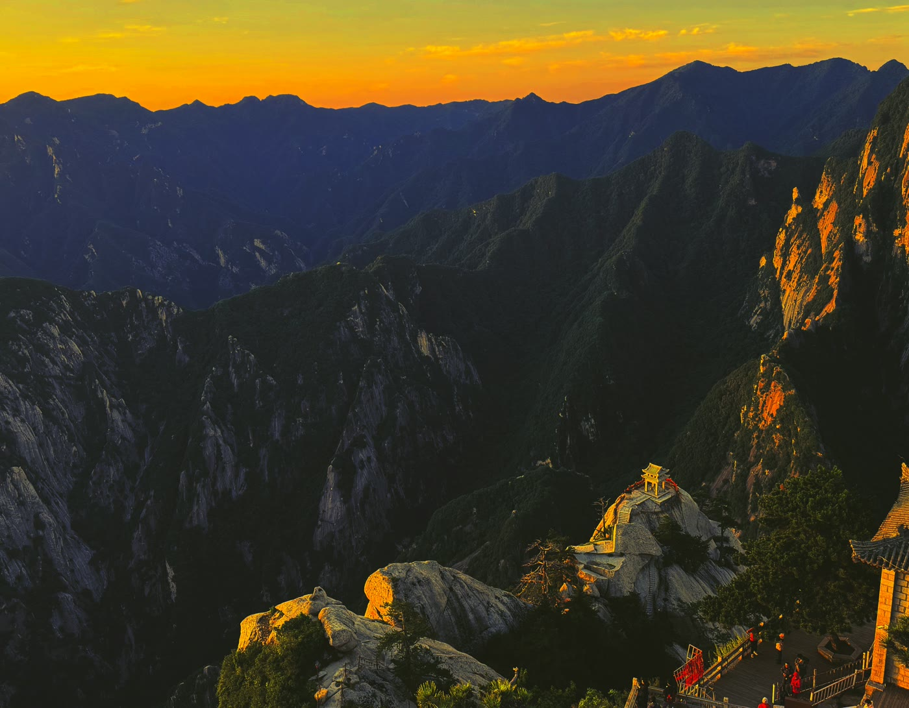

中国には古くから「五岳」と呼ばれる5つの名山があり、東岳・泰山の「雄」、南岳・衡山の「秀」、中岳・嵩山の「峻」、北岳・恒山の「幽」と並んで、西岳・華山は「険」の一字で語られてきました。陝西省渭南市華陰市にそびえる華山は、西安完全ガイド:なぜ「長安」だったのか、行き方や兵馬俑から日帰りで足を延ばせる距離にありながら、断崖絶壁に刻まれた登山道と鎖だけを頼りに登る「奇険天下第一山」として知られています。この記事では、華山ならではの険しさの正体と、訪問前に知っておきたい実務情報をまとめました。
「自古華山一条路」:かつて道は一本だけだった
「自古華山一条路(古来、華山には一本の道しかない)」ということわざがあるほど、かつての華山は玉泉院を起点に、五里関・莎羅坪・毛女洞・青柯坪・回心石・千尺幢・百尺峡・老君犁溝を経て北峰へ至り、そこからさらに蒼龍嶺・五雲峰・金鎖関を越えて主峰群へ向かう、たった一本の徒歩ルートしか存在しませんでした。道幅は狭く切り立った崖の連続で、後戻りもままならないことから「回心石」という、これ以上進むのを諦めて引き返す人が多かった場所の名前まで残っています。
この状況が大きく変わったのは1990年代以降です。現在では、この歴史的な徒歩ルート(通称「智取華山路」)に加えて、北峰索道(1997年開通)と西峰索道(2013年開通)という2本のロープウェイが整備され、体力や時間に応じてルートを選べるようになりました。「一条路」だった時代の緊張感を味わいたいなら徒歩ルート、効率よく主峰群を回りたいならロープウェイ、というように目的で使い分けられるのが今の華山です。
五峰めぐり:どこで日の出を見るか
華山は東・西・南・北・中の5つの峰からなり、遠くから眺めると一輪の蓮の花のような形をしていることから、中峰は「花芯」にもたとえられます。
- 南峰(落雁峰):標高2,154.9mで華山の最高峰。五岳の主峰の中でも最も標高が高いとされ、「太華極頂」の異名を持ちます
- 東峰(朝陽峰):標高2,096.2m。山頂の「朝陽台」は華山でもっとも人気の高い日の出観賞スポットで、山頂の宿泊施設に泊まって未明から登る人も多いエリアです
- 西峰(蓮花峰):標高2,082.6m。なだらかで開放的な山容から「蓮花峰」の名を持ち、西峰索道の終点でもあります
- 中峰(玉女峰):標高2,037.8m。5峰の中央に位置し、主要な休憩ポイントになっています
- 北峰(雲台峰):標高1,614.7mと5峰の中で最も低いものの、雲海や夕景の撮影スポットとして知られ、北峰索道の終点でもあります

「天下第一の険」を体感する:長空桟道と鷂子翻身
華山の代名詞ともいえるのが、南峰東側の断崖に700年以上前から設けられている長空桟道です。幅約30cmの木の板と岩棚をつなぎ合わせただけの桟道が断崖に沿って延びており、2013年には海外の旅行メディアが選ぶ「世界で最も恐ろしい断崖の道」の一つにも数えられました。現在は景区が用意する安全ベルト(命綱)の着用が必須で、レンタル料は1人30元(約690円)。ベルトを装着し、崖に向かって体を密着させながら横歩きで進む形になり、装着なしでの通行は認められていません。
東峰にある鷂子翻身も同様に有名な難所で、岩肌に刻まれた狭い足場を鉄の鎖を握りながらつま先で探るように下ります。こちらも安全ベルトを装着した上でのチャレンジが前提です。いずれも高所恐怖症・高血圧・心血管疾患のある人は避けるべきとされており、決して「度胸試し」だけで踏み込む場所ではありません。他にも千尺幢・百尺峡・蒼龍嶺といった、かつての「一条路」に残る険しい区間が随所にあり、防滑性のある登山靴と軍手(鎖で手を切らないため)は必携です。
ロープウェイ2ルート:西峰索道と北峰索道
登るエリアによって使うロープウェイが変わります。
- 西峰索道(太華索道):麓の氷渓山荘付近から西峰(蓮花峰)へ直結する全長4,211m・高低差894mのルートで、単線循環式としては崖壁に駅舎を組み込み、途中駅も備える世界初の設計として2013年4月に開通しました。片道の乗車時間は約20〜25分。料金は旺季(片道)140元(約3,220円)、淡季120元(約2,760円)で、乗り場までの送迎バス代が別途40元(約920円)前後かかります
- 北峰索道(雲台索道):全長1,524.9m・高低差755mを5〜8分で結ぶ短距離ルート。料金は旺季が片道80元(約1,840円)・往復150元(約3,450円)、淡季は片道45元(約1,040円)・往復80元(約1,840円)で、送迎バス代は片道20元(約460円)前後です
索道の運行時間は上りが7:00〜16:00頃、下りは20:00頃までが目安です(季節・天候により変動)。西峰から北峰へ縦走する「西上北下」ルートが最も一般的な1日コースとして紹介されています。
入山料金
入山料は旺季(3月1日〜11月30日)が大人160元(約3,680円)・学生および60〜69歳のシニア80元(約1,840円)、淡季(12月1日〜翌年2月末)は大人100元(約2,300円)・半額50元(約1,150円)です(70歳以上・1.2m以下の子供・現役軍人などは証明書提示で無料)。チケットは購入から48時間有効とされています。
なお、2026年7月15日〜10月10日の期間は「惠民政策」として主峰区の大人料金が期間限定で半額の80元(約1,840円)に引き下げられており、本稿執筆時点(2026年9月)ではこの割引が適用中です。ただし対象は主峰区の入山料のみで、ロープウェイ代や景区内バス代、長空桟道などの安全ベルト料金は別扱いです。この期間はオンラインでの実名・時間帯指定予約が基本で、現地窓口での当日購入枠は縮小されています。割引の有無・条件は年によって変わるため、渡航前に「華山旅游」公式チャンネルで最新情報を確認してください。
金庸の武侠小説と「華山論剑」
華山は中国武侠小説の巨匠・金庸(ジン・ヨン)の代表作『射鵰英雄伝』『神鵰侠侶』に登場する「華山論剑」という名場面の舞台としても知られています。東邪・西毒・南帝・北丐・中神通と呼ばれる5人の達人が、天下第一の武術家の座と秘伝の書をめぐって華山山頂で技を競い合うという設定で、以来「華山論剑」という言葉自体が、中華圏では「一流の者同士が競い合う場」を指す慣用句として広く使われるようになりました。実際に頂上に立つと、こうした物語の舞台になった山だと実感しやすいかもしれません。
道教の聖地としての一面
華山は中国道教における「三十六洞天」の第四洞天とされ、山中には玉泉院・西岳廟・鎮岳宮など歴史ある道観が点在する道教の聖地でもあります。登山ルート沿いにこうした道観の前を通ることもありますが、本稿では登山・自然景観そのものの情報を中心にまとめているため、各道観の詳細な参拝情報には立ち入りません。
西安からの行き方:日帰りも可能な距離
華山には空港がなく、日本からの直行アクセスは想定されていません。多くの旅行者は西安を拠点に、日帰りまたは1泊2日で訪れています。西安市街から華山までは直線距離で約120km、西安北駅から高速鉄道(高鉄)に乗れば華山北駅までわずか27〜28分(二等座は約57元、約1,310円)というアクセスの良さが最大の魅力です。華山北駅からは無料または低額のシャトルバスで景区の入り口(遊客中心)まで約15〜20分ほどかかります。
兵馬俑観光とあわせて、西安発着で「兵馬俑+華山」を組み合わせた行程を組む旅行者も少なくありません。ただし華山は登山そのものに半日〜1日を要するため、兵馬俑と同日に無理に詰め込むよりも、日程を分けて余裕を持たせることをおすすめします。
気候とベストシーズン、登山装備
山麓と山頂では気候が大きく異なります。ベストシーズンは春(4〜6月)と秋(9〜10月)で、気温が安定し視界も開けやすい時期です。夏は日中こそ25〜30℃前後まで上がりますが山頂との寒暖差が大きく、冬(12〜2月)は山頂が氷点下15〜25℃前後まで冷え込み、石段が凍結・積雪することもあります。春先の雨の後も石段が滑りやすくなる点に注意してください。
黄山など他の名山と比べても、華山は急な階段・鎖場が多く体力的な負荷が高いルートです。防滑性のある登山靴(サンダルやヒールは不可)、手を保護する軍手、防寒着、懐中電灯(夜間・早朝登山の場合)、行動食と十分な飲料水を用意しておくと安心です。
まとめ
華山は、「自古華山一条路」の時代の緊張感を今も長空桟道や鷂子翻身に残しながら、ロープウェイの整備で誰でもアクセスしやすい山にもなった、両方の顔を持つ名山です。西安から日帰り圏内という利便性の高さも魅力ですが、断崖の桟道や鎖場に挑む場合は安全ベルトの着用ルールを必ず守り、無理のない計画で訪れてください。
この記事の内容に古い情報や誤りを見つけた場合、あるいはご感想・ご質問がありましたら、お問い合わせまでお気軽にご連絡ください。